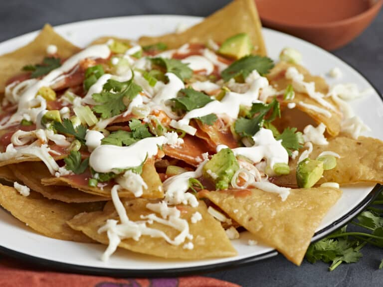

Chilaquiles

Description
Chilaquiles are a hearty, delicious, and easy-to-make Mexican breakfast dish
that’ll knock your socks off! These budget-friendly bad boys
are made with crispy tortilla chips soaked in a flavorful red enchilada sauce
and served with loads of toppings.
Ingredients
- 1/4 cup cooking oil
- 8 white or yellow corn tortillas (8-inch)
- 1/4 tsp salt
- 1 10oz. can red enchilada sauce
- 1/4 cup crumbled queso fresco
- 1/2 cup shredded Oaxaca cheese
- 1/4 cup fresh cilantro leaves
- 1/3 cup sliced green onions
- 1 avocado, diced
- 2 Tbsp Mexican crema
Instructions
- Line a sheet pan or large plate with paper towels.
Stack 8 corn tortillas and cut them into quarters.
- n a large skillet set over medium heat, warm the cooking
oil until shimmering. Add two layers of tortilla quarters
at a time and fry, turning as needed, until lightly browned
and slightly crunchy, about 1 minute on each side.
Transfer the tortilla quarters to the paper towel-lined plate to drain.
Repeat with the remaining tortilla quarters.
- Warm the red enchilada sauce* in a large saucepan.
- Divide tortilla chips between two large plates.
Divide the warm sauce equally, drizzling it over
the tortilla chips on each plate.
- Sprinkle each plate equally with the shredded Oaxaca cheese,
crumbled queso fresco, fresh cilantro leaves, sliced green onions,
diced avocado, and Mexican crema. Enjoy the ridiculously yummy
contrasting flavors, textures, and temperatures immediately!